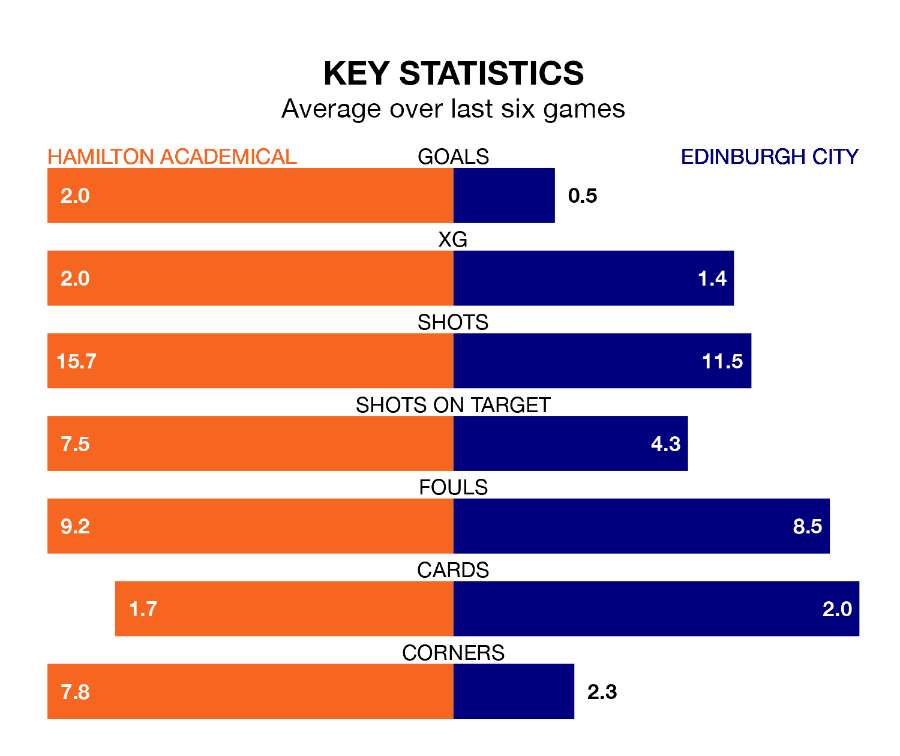

Relegation candidates Edinburgh City face a challenge away against high-flying Hamilton Academical at the Fountain of Youth Stadium on Saturday.
Edinburgh City are rooted to the bottom of the League One table, and have picked up just two wins and five draws in their 27 games to date.
The Accies, meanwhile, are second in the standings with 52 points, having won 15 and drawn seven, and are 17 points behind table-toppers Falkirk.
Hamilton Academical are in mixed form in League One, with two wins and a draw from their last six games.
With no wins and a draw over that period, Edinburgh's form is much worse – they have taken one point from 18, compared to the Accies's seven.
With 56 goals in 27 games so far this season, the home side are the league's second-highest scorers with 2.1 goals per game. And they are conceding fewer than average, letting in 22 goals at a rate of 0.8 per game.
City, meanwhile, are below average scorers, with 1.1 goals per game, compared to a league average of 1.6. They have conceded 2.8 goals per game.
In the last 10 years, Hamilton Academical and Edinburgh have played each other on six occasions. Hamilton Academical won five of them and they drew once.
On average, the Accies scored 3.2 goals and Edinburgh 0.8 in those matches.
Their last meeting was on December 30, when Hamilton Academical won 5-2 away.
In Kevin O'Hara, Hamilton Academical have one of the league's sharpest shooters so far this season. He has notched 11 goals in 27 appearances, to sit third in the scoring charts.
His goal rate of one every 189 minutes is slightly quicker than that of Robert Mahon, the visitors' top scorer with a goal every 137 minutes, and a total of seven goals in 16 games.
Hamilton Academical's last match was on March 2, a 5-0 win against Kelty Hearts, with Ahkeem Shavon Rose (three), Jake Davidson and Reghan Tumilty getting the goals for the Accies.
Edinburgh lost 2-0 against Cove Rangers last time out, also on March 2.
Updated: 09:34 (UTC), 08/03/24